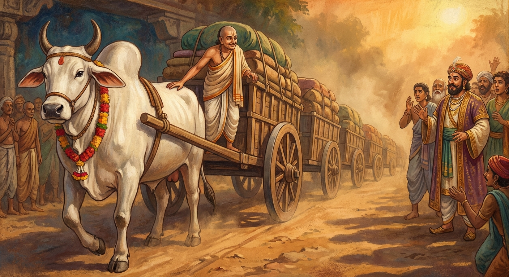

8. නන්දිවිසාල ජාතකය (28)
“මිහිරි වදන්ම දෙඩිය යුතුය” යන මේ ජාතක කතාව ශාස්තෘන් වහන්සේ ජේතවනාරාමයේ වැඩවාසය කරන සමයෙහි ෂඩ්වර්ගික භික්ෂූන්ගේ පරුෂ වචන (ආක්රෝශ පරිභව) අරබයා දේශනා කළ සේක. එකල ෂඩ්වර්ගික භික්ෂූහු කලහ කරමින්, ප්රියශීලී භික්ෂූන්ට ගරහති; අවමන් කරති; වචන නමැති හී වලින් විදිනාක් මෙන් රිදවති; දස වැදගත් ආක්රෝශ වස්තූන්ගෙන් බැන වදිති. ඒ භික්ෂූහු මේ බව භාග්යවතුන් වහන්සේට දැන්වූහ. භාග්යවතුන් වහන්සේ ෂඩ්වර්ගිකයන් කැඳවා, “මහණෙනි, මේ කියන්නේ සත්යයක් දැ?” යි විමසා, “සත්යයකි” යි පැවසූ විට, ඔවුන්ට දෝෂාරෝපණය කළ සේක. “මහණෙනි, පරුෂ වචනය නම් තිරිසන් සතුන්ට පවා අමනාපය. පෙර එක් තිරිසන් සතෙක් තමාට පරුෂ වචනයෙන් කතා කළ අයකු දහසකින් පැරදවූයේය” යි වදාරා අතීත කතාව ගෙනහැර දැක්වූ සේක.
පෙර ගන්ධාර රට තක්සලාවෙහි ගන්ධාර නම් රජෙක් රාජ්යය කළේය. එකල බෝධිසත්වයෝ ගව යෝනියෙහි උපන්හ. ඔහු ඉතා තරුණ වසු පැටවකු කාලයේදීම එක් බමුණෙක් ගව දානය දෙන මිනිසුන් වෙතින් මොහු ලබාගෙන, “නන්දිවිසාල” යැයි නම් තබා, තමාගේම පුතෙකු මෙන් සලකා ඉතා ආදරයෙන් කැඳ බත් ආදිය දී පෝෂණය කළේය. බෝධිසත්වයෝ වියට පත් වූ කල්හි මෙසේ සිතූහ: “මම මේ බමුණා විසින් ඉතා දුක සේ පෝෂණය කරන ලද්දෙමි. මුළු දඹදිවම මා හා සමාන බර ඇදීමට සමත් වෙනත් ගොනෙක් නැත. මම මගේ කායික ශක්තිය පෙන්වා මේ බමුණාට මා පෝෂණය කිරීමේ ණය (මිල) ගෙවන්නෙම් නම් මැනවි.” දිනක් ඔහු බමුණාට මෙසේ කීවේය: “බමුණ, යන්න; ගව සම්පත් ඇති එක් සිටුවරයකු වෙත එළැඹ ‘මාගේ ගොනා එකිනෙක බැඳි ගැල් සියයක් අදී’ යැයි පවසා දහසක් පරදුවට තබා ඔට්ටු අල්ලන්න.” ඒ බමුණා සිටුවරයා වෙත ගොස් කතාවක් මතු කළේය. “මේ නගරයේ කාගේ ගොන්නු ද කායික ශක්තියෙන් යුක්ත?” ඉක්බිති සිටුවරයා “අසවලාගේ සහ අසවලාගේය” යි කියා, “එහෙත් මුළු නගරයේම අපගේ ගොනුන්ට සමාන කෙනෙක් නැතැ” යි කීය. බමුණා පැවසුවේ, “එකට බැඳි ගැල් සියයක් පවා පෙරළාගෙන යාමට (ඇදීමට) සමත් මාගේ එක් ගොනෙක් සිටී” යනුවෙනි. සිටු ගෘහපතියා, “එබඳු ගොනෙක් කොහෙන්ද?” යි ඇසීය. බමුණා, “මාගේ ගෙදර සිටී” යැයි කීය. “එසේ නම් ඔට්ටු අල්ලන්න.” “හොඳයි, කරමි” යි කියා බමුණා දහසක ඔට්ටුවක් තැබීය.
සිටුවරයා ගැල් සියයක් වැලි, බොරළු සහ ගල් වලින් පුරවා, පේළියට තබා, සියල්ලම ආක්ෂක බන්ධන යොත් (ගැල් අරවට යොදන රැහැන්) මගින් එකට බැඳ තැබීය. නන්දිවිසාල ගොනා නහවා, සුවඳ විලවුන්වලින් පසැඟිලි සලකුණු තබා, බෙල්ලේ මල් මාලා පළඳවා, පෙරටම තිබූ ගැලෙහි විය ගසෙහි තනිවම යෙදුවේය. බමුණා ද විය ගස මතුපිට හිඳගෙන, කෙවිට ඔසවා, “යව, කූටය (කපටි ගොන)! අදින්න, කූටය!” යි කීය. බෝධිසත්වයෝ, “මොහු අකූට (කපටි නොවන) වූ මට ‘කූට’ වාදයෙන් (පරුෂ වචනයෙන්) කතා කරයි” යැයි සිතා පාද සතර ටැම් සතරක් මෙන් නිසල කොටගෙන සිටියේය. සිටුවරයා එම මොහොතේම බමුණාගෙන් දහස ලබා ගත්තේය. බමුණා දහසකින් පැරදී, ගොනා මුදා හැර, ගෙදර ගොස් ශෝකයෙන් යටපත්ව වැතිර සිටියේය. නන්දිවිසාල තණ කා ඇවිද නැවත පැමිණ, ශෝකයෙන් පෙළෙන බමුණා දැක, ළඟට ගොස්, “බමුණ, ඇයි මේ නිදන්නේ?” යි ඇසීය. “දහසකින් පැරදුණු මට කවර නින්දක්ද?” “බමුණ, මම මෙතෙක් කල් ඔබගේ නිවසේ වසන විට, කිසි දිනක එක භාජනයක් හෝ බිඳ තිබේද? කිසිවකු පාගා තිබේද? නුසුදුසු තැනක මළ මූත්ර කර තිබේද?” “නැත දරුව.” “එසේ නම් ඔබ මට කූට වාදයෙන් (පරුෂ වචනයෙන්) කතා කළේ ඇයි? වරද ඇත්තේ ඔබ අතය; මාගේ වරදක් නැත. යන්න, ඔහු සමඟ දෙදහසකට ඔට්ටු අල්ලන්න. නමුත් අකූට වූ මට කූට වාදයෙන් කතා නොකරන්න (කපටියෙකුට මෙන් කතා නොකරන්න).”
බමුණා ඔහුගේ වචනය අසා ගොස් දෙදහසකට ඔට්ටු අල්ලා, පෙර පරිදිම ගැල් සියය එකට බැඳ, නන්දිවිසාලව සරසා පළමු ගැලෙහි ධුරයෙහි (විය ගසෙහි) යෙදුවේය. කෙසේ යෙදුවේද යත්? විය ගස කරෙහි නිසල කොට බැඳ, එහි එක් කෙළවරක නන්දිවිසාලව බැඳ, අනෙක් කෙළවර ධුරයෙහි ඇති යොතින් (රැහැනින්) වෙළා, විය ගසේ කෙළවරත්, ගැලෙහි අක්ෂයත් (රෝද කරකැවෙන දණ්ඩ) එකට වන සේ මුරුත ලී දණ්ඩක් තබා, ඒ රැහැනින් නොසෙල්වෙන සේ බැඳ තැබීය. මෙසේ කළ විට විය ගස එහා මෙහා නොයයි; එක ගොනෙකුට වුවද ඇදීමට හැකි වෙයි. ඉක්බිති බමුණා විය ගස මතුපිට හිඳගෙන නන්දිවිසාලගේ පිට පිරිමැද, “යන්න, භද්රය (සොඳුරු දරුව)! අදින්න, භද්රය!” යි කීය. බෝධිසත්වයෝ එකට බැඳ තිබූ ගැල් සියයම එකවර ගත් වෙරකින්ම ඇදගෙන ගොස්, අවසානයටම තිබූ ගැල පළමු ගැල තිබූ තැන සිටින පරිදි ඇද නවතා තැබූහ. ගව සම්පත් ඇති සිටුවරයා පැරදී බමුණාට දෙදහසක් දුන්නේය. අන් අයද බෝධිසත්වයන්ට බොහෝ ධනය දුන්හ. ඒ සියල්ල බමුණාටම අයත් විය. මෙසේ ඔහු බෝධිසත්වයන් නිසා බොහෝ ධනය ලැබීය.

ශාස්තෘන් වහන්සේ, “මහණෙනි, පරුෂ වචනය කිසිවකුටත් ප්රියමනාප නොවේ” යැයි වදාරා, ෂඩ්වර්ගික භික්ෂූන්ට දොස් පවරා, ශික්ෂා පදයක් පනවා, අභිසම්බුද්ධ වූ සේක් මේ ගාථාව වදාළ සේක.
“මිහිරි වදන්ම දෙඩිය යුතුය. කිසි දිනක අමිහිරි වචන නොකිය යුතුය. මිහිරි වදන් කී කල්හි බමුණාගේ මහත් බරක් ඔහු (ගොනා) ඇද්දේය. ඔහුට ධනයද ලබා දුන්නේය. ඒ නිසා ඔහු (ගොනා සහ බමුණා) සතුටු සිත් ඇත්තෝ වූහ.”
එහි මනුඤ්ඤමෙව භාසෙය්යා යන්නෙන් අදහස් කරන්නේ අනුන් හා කතා කරන විට බොරු කීම ආදී වාග් දෝෂ සතරින් තොර වූ, මධුර වූ, සිතට ප්රිය වූ, සිනිඳු වූ, මෘදු වූ ප්රිය වචනම කතා කළ යුතු බවයි. ගරුං භාරං උදද්ධරී යනු: නන්දිවිසාල ගොනා අමිහිරි වචන කියන විට බර නොඇද්දේය; පසුව මනාප වූ ප්රිය වචන කියන බමුණාගේ මහත් වූ බර එසවීය; ඔසවා ඇදගෙන ගොස් පෙරළා දැමුවේය (ගමනාන්තයට පත් කළේය) යන අර්ථයි. මෙහි ‘උද්ධරී’ විය යුතු තැනට ‘උදද්ධරී’ යැයි යෙදුණේ ව්යාංජන සන්ධි වශයෙන් පද සන්ධි කිරීමෙනි.
භාග්යවතුන් වහන්සේ “මනුඤ්ඤමෙව භාසෙය්යා” යනාදී වශයෙන් මේ ධර්ම දේශනාව ගෙනහැර දක්වා ජාතකය සමාධාන කළ (ගළපා වදාළ) සේක. “එකල බ්රාහ්මණයා වූයේ දැන් මේ ආනන්ද තෙරුන්ය. නන්දිවිසාල වූයේ මම ම වෙමි.”
අටවැනි වූ නන්දිවිසාල ජාතක වර්ණනාව නිමාවිය.